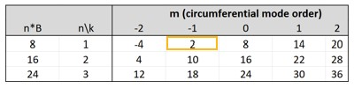
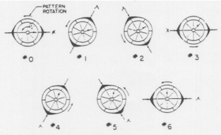
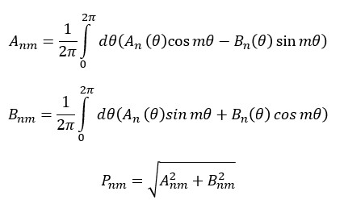
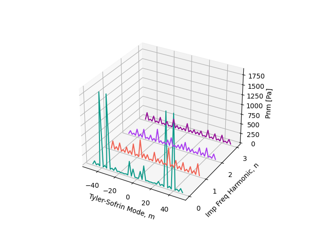

Note
Go to the end to download the full example code
Tyler-Sofrin Compressor Modes Post-Processing#
Objective#
This example demonstrates PyFluent API’s for
Read a case and data file
Create monitor points to calculate Fourier coefficients
Write Fourier coefficients to a file
Tyler-Sofrin mode Plot using the matplotlib library
Background#
Tyler and Sofrin (1961) demonstrated that interactions between a rotor and a stator result in an infinite set of spinning modes. Each Tyler-Sofrin (TS) mode exhibits an m-lobed pattern and rotates at a speed given by the following equation:
\(\text{speed} = \frac{BnΩ}{m}\) Where:
m is the Tyler-Sofrin mode number, defined as ‘m = nB + kV’
n is the impeller frequency harmonic
k is the vane harmonic
B is the number of rotating blades
V is the number of stationary vanes
Ω is the Rotor shaft speed, rad/s
Example:
8-blade rotor interacting with a 6-vane stator
2-lobed pattern turning at (8)(1)/(2) = 4 times shaft speed
Example Table#
Tyler-Sofrin Modes#
Example Note: Discrete Fourier Transform (DFT)#
In order to calculate the pressure related to each TS-mode, extend the simulation and perform the DFT of pressure at the desired blade passing frequency harmonics.
Disable the Hanning windowing (specifically for periodic flows like this one) to avoid getting half the expected magnitudes for periodic flows. Make sure to set the windowing parameter to ‘None’ when specifying the Discrete Fourier Transform (DFT) in the graphical user interface (GUI).
The DFT data will only be accurate if the sampling is done across the entire specified sampling period.
Note
The .cas/.dat file provided with this example is for demonstration purposes only. A finer mesh is necessary for accurate acoustic analysis. This example uses data sets generated with Ansys Fluent V2023R2.
Post-Processing Implementation#
Import required libraries/modules#
import math
from pathlib import Path
import random
import ansys.fluent.core as pyfluent
from ansys.fluent.core import examples
import matplotlib.pyplot as plt
import numpy as np
Specifying save path#
save_path can be specified as:
Path(“E:/”, “pyfluent-examples-tests”) or
Path(“E:/pyfluent-examples-tests”) in a Windows machine for example, or
Path(“~/pyfluent-examples-tests”) in Linux.
save_path = Path(pyfluent.EXAMPLES_PATH)
Downloading cas/dat file#
import_filename = examples.download_file(
"axial_comp_fullWheel_DFT_23R2.cas.h5",
"pyfluent/examples/Tyler-Sofrin-Modes-Compressor",
) # noqa: E501
examples.download_file(
"axial_comp_fullWheel_DFT_23R2.dat.h5",
"pyfluent/examples/Tyler-Sofrin-Modes-Compressor",
save_path=save_path,
)
Launch Fluent session#
session = pyfluent.launch_fluent(
show_gui=True, processor_count=4, product_version="23.2.0"
)
Reading case and data file#
Note
The dat file should correspond to the already completed DFT simulation.
session.tui.file.read_case_data(import_filename)
Define User constant/variables#
Note
The variable names should match the ones written from the DFT and can be identified by manually examining the solution variables as shown below:
varname = [
"mean-static-pressure-dataset",
"dft-static-pressure_10.00kHz-ta",
"dft-static-pressure-1_21.43kHz-ta",
"dft-static-pressure-2_30.00kHz-ta",
]
n_mode = [0, 1, 2, 3] # Impeller frequency harmonics
r = 0.082 # meters
z = -0.037 # meters
d_theta = 5 # degrees
m_max = 50 # maximum TS mode number
# Plot will be from -m_max to +m_max, incremented by m_inc
m_inc = 2 # TS mode increment
Create monitor points#
for angle in range(0, 360, d_theta):
x = math.cos(math.radians(angle)) * r
y = math.sin(math.radians(angle)) * r
session.tui.surface.point_surface("point-" + str(angle), x, y, z)
Compute Fourier coefficients at each monitor point (An, Bn)#
An = np.zeros((len(varname), int(360 / d_theta)))
Bn = np.zeros((len(varname), int(360 / d_theta)))
for angle_ind, angle in enumerate(range(0, 360, d_theta)):
for n_ind, variable in enumerate(varname):
if len(variable) >= 4 and variable[:4] == "mean":
session.solution.report_definitions.surface["mag-report"] = {
"report_type": "surface-vertexavg",
"surface_names": ["point-" + str(angle)],
"field": str(variable),
}
mag = session.solution.report_definitions.compute(
report_defs=["mag-report"]
)
mag = mag[0]["mag-report"][0]
An[n_ind][angle_ind] = mag
Bn[n_ind][angle_ind] = 0
else:
session.solution.report_definitions.surface["mag-report"] = {
"report_type": "surface-vertexavg",
"surface_names": ["point-" + str(angle)],
"field": str(variable) + "-mag",
}
mag = session.solution.report_definitions.compute(
report_defs=["mag-report"]
)
mag = mag[0]["mag-report"][0]
session.solution.report_definitions.surface["phase-report"] = {
"report_type": "surface-vertexavg",
"surface_names": ["point-" + str(angle)],
"field": str(variable) + "-phase",
}
phase = session.solution.report_definitions.compute(
report_defs=["phase-report"]
)
phase = phase[0]["phase-report"][0]
An[n_ind][angle_ind] = mag * math.cos(phase)
Bn[n_ind][angle_ind] = -mag * math.sin(phase)
Write Fourier coefficients to file#
Note
This step is only required if data is to be processed with other standalone tools. Update the path to the file accordingly.
fourier_coefficients_file = Path(save_path, "FourierCoefficients.txt")
with open(fourier_coefficients_file, "w") as f:
f.write("n theta An Bn \n")
for n_ind, variable in enumerate(varname):
for ind, x in enumerate(An[n_ind, :]):
f.write(
str(n_mode[n_ind])
+ ","
+ str(ind * d_theta)
+ ","
+ str(An[n_ind, ind])
+ ","
+ str(Bn[n_ind, ind])
+ "\n"
)
Calculate Resultant Pressure Field#
Create list of m values based on m_max and m_inc
m_mode = range(-m_max, m_max + m_inc, m_inc)
# Initialize solution matrices with zeros
Anm = np.zeros((len(varname), len(m_mode)))
Bnm = np.zeros((len(varname), len(m_mode)))
Pnm = np.zeros((len(varname), len(m_mode)))
for n_ind, variable in enumerate(varname): # loop over n modes
for m_ind, m in enumerate(m_mode): # loop over m modes
for angle_ind, angle in enumerate(
np.arange(0, math.radians(360), math.radians(d_theta))
): # loop over all angles, in radians
Anm[n_ind][m_ind] += An[n_ind][angle_ind] * math.cos(m * angle) - Bn[n_ind][
angle_ind
] * math.sin(m * angle)
Bnm[n_ind][m_ind] += An[n_ind][angle_ind] * math.sin(m * angle) + Bn[n_ind][
angle_ind
] * math.cos(m * angle)
Anm[n_ind][m_ind] = Anm[n_ind][m_ind] / (2 * math.pi) * math.radians(d_theta)
Bnm[n_ind][m_ind] = Bnm[n_ind][m_ind] / (2 * math.pi) * math.radians(d_theta)
Pnm[n_ind][m_ind] = math.sqrt(Anm[n_ind][m_ind] ** 2 + Bnm[n_ind][m_ind] ** 2)
# P_00 is generally orders of magnitude larger than that of other modes.
# Giving focus to other modes by setting P_00 equal to zero
Pnm[0][int(len(m_mode) / 2)] = 0
Plot Tyler-Sofrin modes#
fig = plt.figure()
ax = plt.axes(projection="3d")
ax.set_xlabel("Tyler-Sofrin Mode, m")
ax.set_ylabel("Imp Freq Harmonic, n")
ax.set_zlabel("Pnm [Pa]")
plt.yticks(n_mode)
for n_ind, n in enumerate(n_mode):
x = m_mode
y = np.full(Pnm.shape[1], n)
z = Pnm[n_ind]
rgb = (random.random(), random.random(), random.random())
ax.plot3D(x, y, z, c=rgb)
plt.show()
Tyler-Sofrin modes#
Close the session#
session.exit()
References#
[1] J.M. Tyler and T. G. Sofrin, Axial Flow Compressor Noise Studies,1961 Manly Memorial Award.
# sphinx_gallery_thumbnail_path = '_static/ts_modes.png'
Total running time of the script: (0 minutes 0.000 seconds)